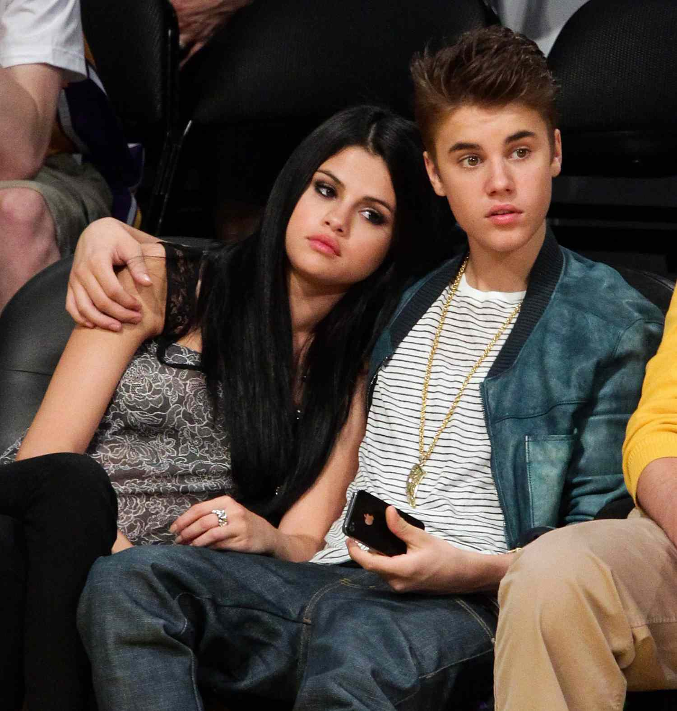
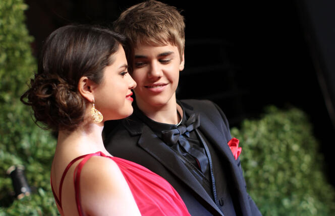
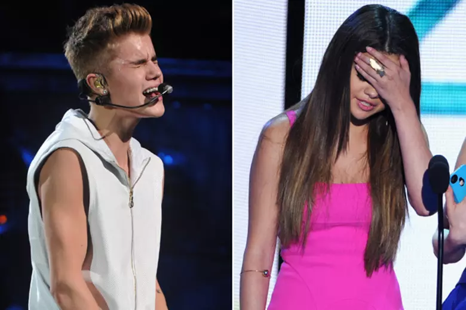
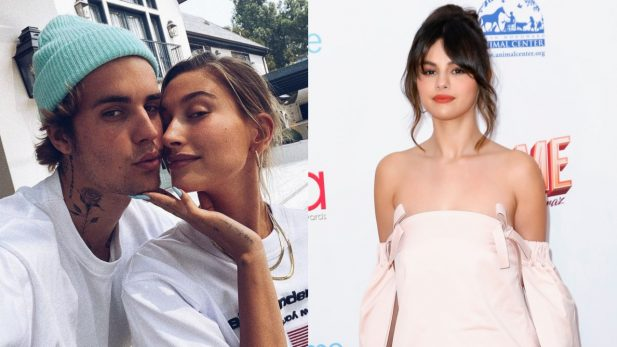

Justin Bieber and Selena Gomez met for the first time as teens. The world would soon become obsessed with their relationship.
November 2009
The couple made their first official appearance together at the Vanity Fair Oscar Party, confirming their relationship.
February 2011
Despite their love, the couple faced difficulties and decided to part ways, leaving fans heartbroken.
November 2012
The couple was seen together multiple times during these years, sparking rumors of a rekindled romance.
2014 - 2017
In 2018, the couple decided to end their relationship for good. Justin later married Hailey Baldwin, while Selena focused on her career and well-being.
March 2018
